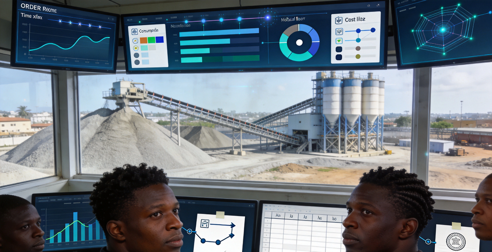

Le Système de Gestion de la Centrale à Béton est une plateforme numérique complète pour les centrales à béton. Face aux défis des centrales sur site (contrôle de formulation lâche, planification chaotique, consommation floue), le système offre la pré-configuration des formulations, la gestion du cycle de vie complet des commandes, les statistiques de consommation et les documents de règlement inter-projets, garantissant des proportions précises et des processus traçables.
Caractéristiques Clés
Le système couvre production, rapports matériaux, configuration centrale, formulation, commandes externes et demandes — six modules.
Gestion de Production
Création, visualisation et gestion centralisées de toutes les commandes de production de béton, avec planification, émission, suivi statut, basculement et livraison — cycle complet.
Rapports Consommation
Statistiques de la consommation réelle par grade au cours de la production, comparaison avec la formulation budgétisée.
Configuration Centrale
Définition du type de centrale, attribution des administrateurs et ateliers.
Formulation Béton
Formulations prédéfinies pour différentes classes de résistance, comme base autoritaire pour les demandes de matériaux.
Commandes Externes
Gestion centralisée des commandes béton produites pour d'autres projets, avec règlement et analyse de capacité.
Demande
Les chefs de chantier ou ingénieurs soumettent les demandes, qui entrent dans la planification après validation.
Architecture du Système
Production Flow
Architecture en boucle fermée : demande → validation → planification → production → livraison → règlement. Intégration avec le Système de Gestion de Projet pour l'agrégation en temps réel des coûts béton, et avec le Système de Gestion des Matériaux pour l'approvisionnement en matières premières.
Scénarios d'Application
Adapté à la planification des commandes, au contrôle précis des formulations, à l'analyse de consommation et aux documents de règlement inter-projets.
Planification Commandes
Gestion centralisée de toutes les commandes avec planification, émission, suivi statut, basculement et livraison — cycle complet.
Contrôle Formulation
Formulations prédéfinies pour différentes classes de résistance, garantissant un processus précis et contrôlable.
Consommation & Coût
Statistiques de consommation par grade, comparaison avec la formulation budgétisée, support du contrôle des coûts.

Règlement Inter-Projets
Gestion centralisée des commandes OEM, avec règlement et analyse de capacité.
Avantages et cas
Ajustement en temps réel des dosages
Prend en charge l’ajustement en ligne en temps réel des dosages, garantissant la stabilité de la qualité du béton, et répondant de manière flexible aux exigences de résistance et de procédé des différents scénarios de construction.
Collecte en temps réel des coûts
Interconnecté avec le système de gestion budgétaire des travaux, il permet la collecte en temps réel des coûts du béton, et les écarts entre la consommation de matière première de production et les quantités budgétées sont visibles instantanément.
Transparence de l’ensemble du processus de production
Couvre l’ensemble du cycle de vie : demande de matière, approbation, ordonnancement de la production, fabrication, livraison, règlement. L’avancement de la production et les données de qualité sont consultables en temps réel.
Règlement pour la sous-traitance entre projets
Prend en charge la production en sous-traitance entre projets et le règlement indépendant, pour une allocation flexible des ressources de capacité de production et une utilisation maximale de celles-ci.
Interconnexion avec le système de gestion des matériaux
Intégré en profondeur avec le système de gestion des matériaux, l’inventaire des matières premières est synchronisé en temps réel, et les alertes de pénurie sont déclenchées automatiquement, garantissant la continuité de la production.
Boucle fermée de traçabilité de la qualité
Pour chaque lot de béton, l’ensemble des informations (dosage, source des matières premières, heure de production, rapport de contrôle qualité) est enregistré sur toute la chaîne, permettant la traçabilité de la responsabilité qualité.
Étude des besoins
Nous étudions en profondeur le processus de production de la centrale à béton et les besoins de gestion des dosages, et structurons les points d’intégration avec les systèmes budgétaires et de gestion des matériaux.
Déploiement du système
Prend en charge le déploiement local et le déploiement sur cloud, s’adaptant aux besoins de gestion de centrales à béton de différentes tailles et à l’environnement réseau sur site.
Formation et mise en ligne
Nous proposons une formation différenciée pour les administrateurs, les opérateurs et les ingénieurs, couvrant la maintenance des dosages, l’ordonnancement de la production, la collecte des coûts et l’utilisation des rapports.
Acceptation de mise en service
La réception se déroule en trois étapes : tests du processus de production, validation de l’interconnexion des données, tests de charge de performance, pour garantir la stabilité du système avant la livraison officielle.
Gestion de la fourniture de béton pour des projets de grande envergure tels qu'un projet de transport ferroviaire urbain et un immeuble administratif
Contexte : La demande de béton pour les projets est très importante, la précision des dosages et l’efficacité de l’ordonnancement de la production ont un impact direct sur l’avancement des travaux et la qualité de la structure.
Défis : Dans le mode traditionnel, l’ajustement des dosages dépend de l’expérience manuelle, les données d’avancement de la production et de coût sont dispersées, et l’ordonnancement de la capacité de production entre projets manque de support de données.
Solution : Déploiement d’un système de gestion de centrale à béton, permettant un contrôle précis des dosages, une gestion numérique de l’ensemble du processus de production et une collecte en temps réel des coûts.
Résultats : La stabilité de la qualité du béton et l’efficacité de la production ont toutes deux été améliorées, et les écarts entre les données de production et les quantités budgétées sont maîtrisés.
Témoignage client : ——